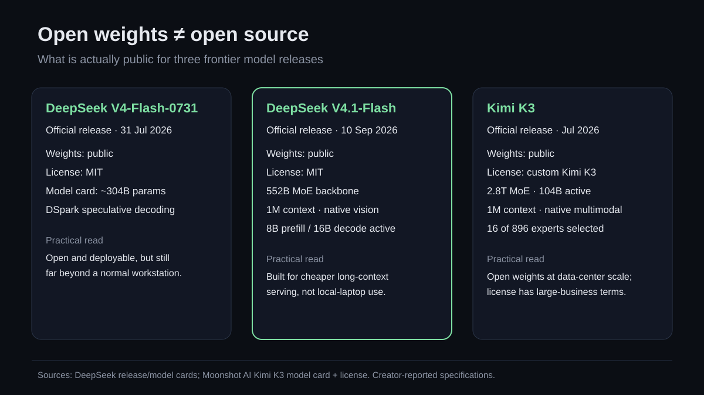

Open weights are having a scale problem
Three names kept showing up in my reading queue: DeepSeek V4.1 Flash, DeepSeek V4 Flash 0731, and Kimi K3. All three are real, official releases. The more interesting question is not whether they exist. It is what “open” means when the smallest headline model has hundreds of billions of parameters.

The visual uses creator-published model cards and licenses. Specifications are not independent performance validation.
First, the naming audit
Official July 31 release. DeepSeek says it superseded the preview and retained the same architecture while improving post-training and agentic behavior.
Official September 10 release, not a rumor or an alias. DeepSeek describes it as a new Causal Encoder-Decoder model family member.
Official Moonshot AI release. The weights, technical report, and a dedicated license are now public.
Too imprecise here. “Open-weight” is the safer label unless training data, full training recipe, code, and licensing all meet the definition you intend.
What changed between DeepSeek V4 Flash and V4.1 Flash?
V4-Flash-0731 is a roughly 304B-parameter model in its public model card. Its practical headline is agentic post-training plus DSpark speculative decoding. The model card documents three reasoning_effort levels and a dedicated message encoder rather than a standard Jinja chat template.
V4.1-Flash is not a minor date-stamped refresh. DeepSeek lists a 552B-parameter multimodal MoE backbone, a one-million-token context window, and native image input. Its 40-layer Causal Encoder-Decoder splits work into a 20-layer causal encoder and 20-layer decoder. DeepSeek says that design activates 8B parameters per input token and 16B per output token.
The architecture points at an increasingly important bottleneck: long-context inference cost. DeepSeek claims its CED design, sparse attention, and compressed KV cache cut persistent cache use sharply versus V4 Flash. Those are creator-reported engineering claims, not results I independently reproduced.
Kimi K3 pushes “open” into data-center territory
Kimi K3’s model card lists 2.8 trillion total parameters, 104B active parameters, 896 experts with 16 selected per token, native multimodality, and a one-million-token context window. Moonshot recommends deployment on supernode configurations with 64 or more accelerators. That sentence matters more to most builders than a leaderboard win.
K3 is open-weight, but its license is not MIT. The Kimi K3 License broadly allows use, modification, distribution, fine-tuning, deployment, and derivative works. It also adds terms for very large Model-as-a-Service businesses and attribution requirements for commercial products above stated user or revenue thresholds. Read the license itself before commercial deployment; this paragraph is a technical summary, not legal advice.
Benchmarks: useful, but not a clean horse race
Both organizations publish large benchmark tables. I am deliberately not turning selected scores into a bar chart. The harness, reasoning effort, tools, context management, fallback behavior, and even task branches differ. Kimi, for example, says its K3 results use max reasoning effort and benchmark-specific agent harnesses; some rows include tool augmentation. DeepSeek’s V4.1 comparisons are likewise release-author measurements.
A benchmark is evidence about a model-plus-harness configuration. It is not a universal speedometer. For a real deployment, I would test:
- your own task distribution and failure costs;
- latency and throughput at the context lengths you actually use;
- tool-call validity and recovery behavior;
- memory, accelerator count, quantization, and serving complexity;
- license terms that match the product.
The practical split
These releases make frontier model internals and weights more available. That is meaningful: researchers can inspect, adapt, benchmark, and deploy without depending only on a closed endpoint. But weights measured in hundreds of billions or trillions of parameters do not produce “local AI” for ordinary developers.
The ecosystem now has two different openness questions:
- Can I obtain and modify the model? For all three releases, yes, within their licenses.
- Can I afford to run the useful configuration? For most individual builders, no. Hosted APIs, inference partners, aggressive quantization, or smaller distilled models remain the practical route.
That is not a reason to dismiss open weights. It is a reason to stop treating “weights downloadable” and “widely accessible” as synonyms.